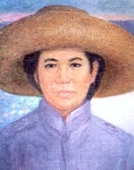
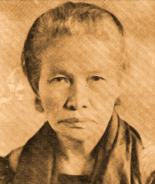
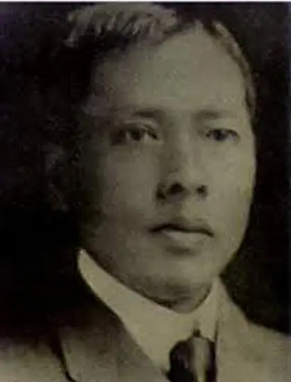
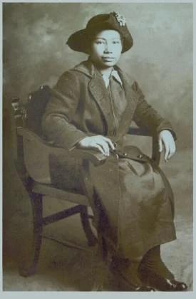
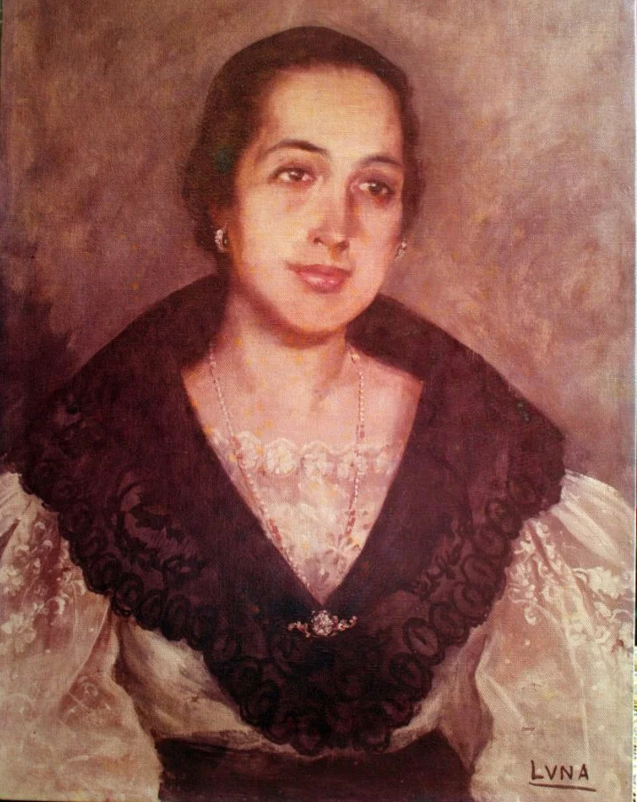

| Image | Name | Birthday/Death | Born/Died/Lived in... | Accomplishments |
|  | Trinidad Perez Tecson | November 18,1848-January 28,1928 | San Miguel de Mayumo, Bulacan (born) | Trinidad Perez Tecson was called the “Mother of Biak-na-Bato” by Gen. Emilio F. Aguinaldo. She was also cited as the “Mother of the Philippine National Red Cross” for her service to her fellow Katipuneros. |
|---|---|---|---|---|
|  | Teresa Magbanua | October 13, 1868-August 1947 | Pototan (born in), Pagadian City (died in) | A schoolteacher and military leader in Pototan, Iloilo. Despite opposition from her husband, Magabnua, she followed her two brothers in the revolution and won several battles against the Spaniards under General Martin Delgado. |
|  | Mariano Trias | October 12, 1868-February 22, 1914 | Cavite (born) | Trias was one of the Katipunan's bravest generals, and he was also among the leading defenders of Cavite against the Spanish. He was chosen as VP of Emilio Aguinaldo in the revolutionary government established during the Tejeros Convention. |
|  | Maria Ylagan Orosa | November 29, 1893-February 13, 1945 | Taal Province, Batangas (born) | During WWII, she devised a process for canning food, which helped the Filipinos become self-sufficient. Her food innovations also helped the Philippines depend less on imports during the war. |
|  | Gliceria Marella de Villavicencio | May 13, 1852-September 25, 1929 | Taal, Batangas (born) | She designated her home, the Casa Villavicencio, a refuge and a secret meeting area for the likes of Andres Bonifacio and Miguel Malvar. She lent Jose Rizal the money he needed to publish Noli Me Tangere and El Filibusterismo, as well as La Solidaridad in Spain. |